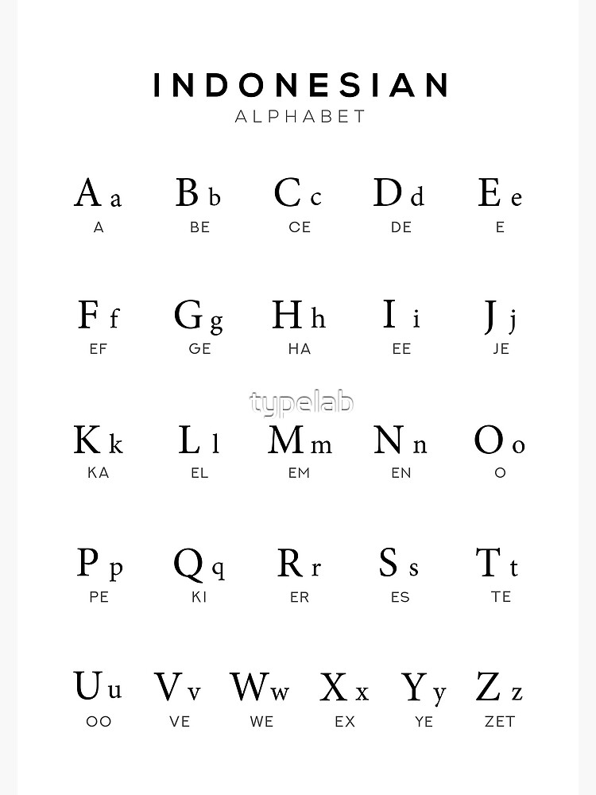
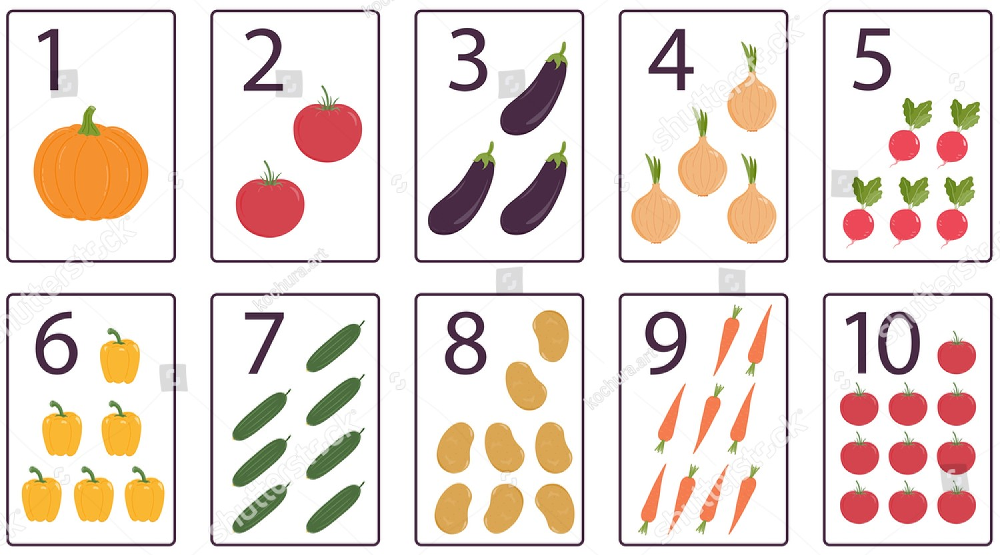
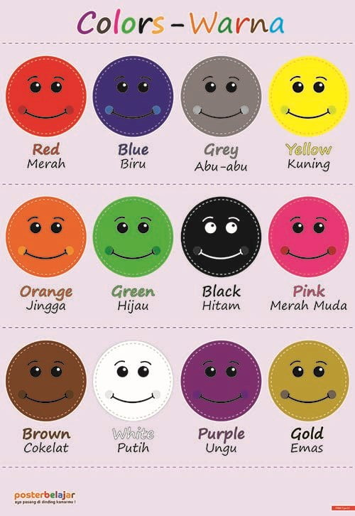

Pelajaran pertama yang paling cocok untuk anak TK adalah belajar mengenal huruf dan membaca. Abjad A - Z lah yang pertama kali harus diperkenalkan pada anak TK.
Untuk itu Saya akan memberikan beberapa contoh gambar yang diharapkan dapat membantu anak TK dalam mengenal huruf dan bisa membaca.

BERHITUNG
Selain membaca kita juga perlu mengajari mereka mengenal angka dan bisa berhitung. Beberapa gambar dibawah ini dapat dgunakan untuk membantu anak TK dalam mengenal angka dan membantunya untuk bisa berhitung
Pada dasarnya angka hanya terdiri dari 0 sampai 9.

MEWARNAI
Kita juga perlu memperkenalkan warna pada anak TK, supaya mereka bisa mengenali warna dan mengetahui suatu benda dari warna. Beberapa contoh gambar yang dapat membantu anak TK untuk dapat mengenali warna dan bisa mewarnai.

LATIHAN
Selain dengan melihat beberapa gambar yang sudah saya tampilkan tadi, Kita juga dapat membantu anak TK untuk lebih memahami pelajaran dengan memberikannya beberapa latihan.
Berikut ini saya berikan beberapa contoh latihan yang bisa dicoba untuk lebih mengasah kemampuan mereka.